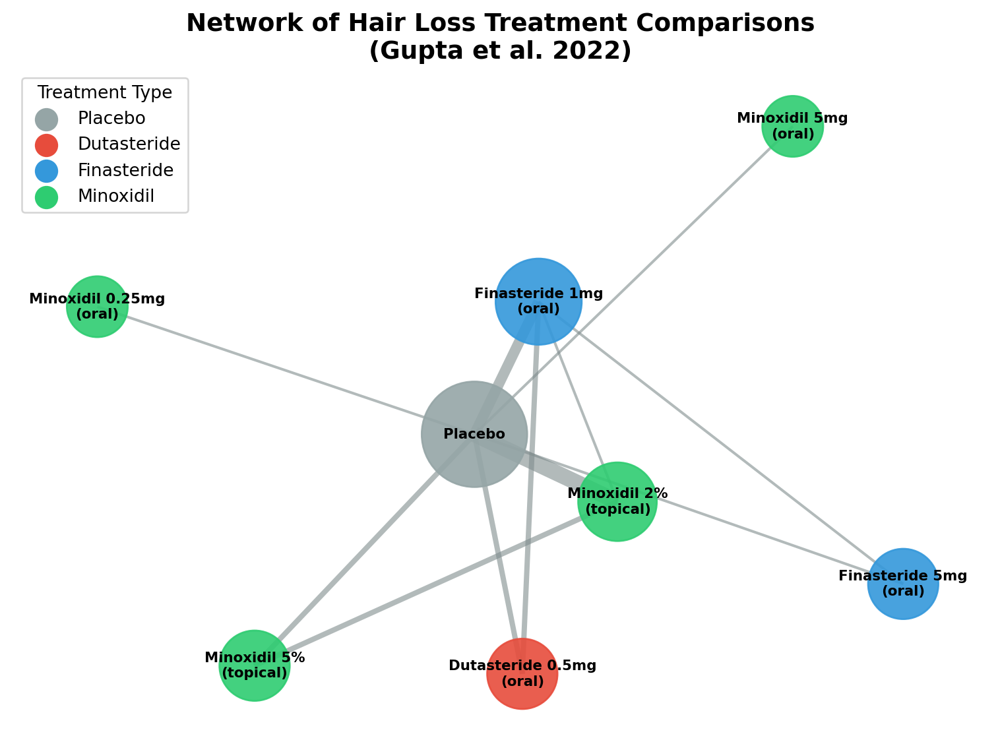

Why the Most Advertised Hair Loss Treatment Isn’t Always the Best
A Data Science Approach to Comparing Treatments with Network Meta-Analysis
data science
statistics
network meta-analysis
health
Author
Jiro Amato
Published
January 17, 2026
The Pharmacy Aisle Problem
You are standing in a pharmacy, staring at a shelf full of hair loss treatments. Each product claims to be “clinically proven” and “most effective solution.” A barber suggested one product, a friend of yours swears by another and the Internet has thousand of conflicting opinions. So how do you actually know which one is the best?
This is not just a problem of hair loss. No matter whether you are choosing medicine, a software or a learning strategy, we face the situation where there are many options, each of them is proved with some evidence and the results are never compared with each other.
Traditional clinical trials are comparing one treatment with a placebo and comparing two treatments. What happens if there are 9 treatments and there are only few experiments. This is where Network Meta-Analysis (NMA) comes in - statistical methods of comparisons of many treatments at the same time, even if it has never been compared with each other before.
The Limitation of Traditional Studies
The randomized controlled trial is the gold-standard of evidence in clinical research. It’s a simple design: take a group of patients, give half of them the treatment and the other half a placebo, then compare the outcomes. The problem is this: suppose Study A shows that Treatment X beats the placebo by increasing hair density by 20 hairs per square centimeter and Study B shows Treatment Y beats the placebo by increasing density by 15 hairs per square centimeter. Can we conclude that Treatment X is better than Treatment Y? Not quite. These two studies may have been conducted on different populations, at different times and using different measurement techniques. For example, the patients in Study A might have been younger or had more severe hair loss to begin with. To directly compare results across studies would be to compare apples and oranges.
There is a real world problem here for both consumers and healthcare providers. When faced with multiple treatment options, each supported by a separate study (or studies) against the placebo, which one should you go with? How do you rank them? How do you make an informed choice?
What is Network Meta-Analysis?
Network Meta-Analysis solves this problem by creating a connected “network” of evidence. Instead of treating each study in isolation, NMA links studies together through their common comparators which is usually placebo.
Think of it like comparing athletes who never competed directly. If Runner A beats Runner C by 5 seconds, and Runner B beats Runner C by 3 seconds, we can reasonably infer that Runner B is probably faster than Runner A by about 2 seconds. The common reference point (Runner C) allows us to make indirect comparisons.
In NMA, we work with three types of evidence:
Direct evidence: Head-to-head trials where treatments were compared directly
Indirect evidence: Comparisons made through a common comparator (like placebo)
Mixed evidence: The combination of both direct and indirect evidence
The magic of NMA is that it synthesizes all available evidence into a coherent framework. Even if Treatment X and Treatment Y were never tested against each other, we can estimate their relative effectiveness through their shared connections to other treatments in the network.
Code
import matplotlib.pyplot as pltimport networkx as nx# Create a network graphG = nx.Graph()# Add nodes (treatments) - based on Gupta et al. 2025treatments = ['Control', 'Minoxidil 5%', 'Minoxidil 2%', 'Melatonin','Rosemary', 'Marine Complex', 'Procyanidin','Saw Palmetto', 'Ketoconazole', 'Watercress']G.add_nodes_from(treatments)# Add edges (studies comparing treatments) - based on Figure 3edges = [ ('Control', 'Minoxidil 5%'), ('Control', 'Minoxidil 2%'), ('Control', 'Marine Complex'), ('Control', 'Procyanidin'), ('Control', 'Watercress'), ('Minoxidil 2%', 'Minoxidil 5%'), ('Minoxidil 2%', 'Rosemary'), ('Minoxidil 2%', 'Ketoconazole'), ('Minoxidil 2%', 'Melatonin'), ('Saw Palmetto', 'Control')]G.add_edges_from(edges)# Draw the networkplt.figure(figsize=(7, 5))pos = nx.spring_layout(G, seed=42, k=2)# Draw nodes with different colorsnode_colors = ['lightgray'if n =='Control'else'skyblue'for n in G.nodes()]nx.draw_networkx_nodes(G, pos, node_color=node_colors, node_size=1500, alpha=0.9)nx.draw_networkx_labels(G, pos, font_size=7, font_weight='bold')nx.draw_networkx_edges(G, pos, width=2, alpha=0.6, edge_color='gray')plt.title('Network of Treatment Comparisons', fontsize=14, fontweight='bold')plt.axis('off')plt.tight_layout()plt.show()

Figure 1: A simplified network diagram showing how treatments connect through common comparators. Each node represents a treatment, and each edge represents studies comparing those treatments.
Most modern NMA studies use a Bayesian statistical framework. Without diving too deep into the mathematics, this approach allows researchers to make probability statements like “there is a 95% probability that Treatment X is the most effective option.” This is incredibly useful for decision-making because it directly answers the question we care about: which treatment should I choose?
Case Study: Which Hair Loss Treatment Actually Works Best?
In August 2025, Gupta and colleagues published a landmark study in the International Journal of Molecular Sciences that applied NMA to answer a question millions of people have asked: among all the over-the-counter hair loss treatments available, which one actually works best?
A systematic review was conducted by gathering data from multiple clinical trials that lasted for 24 weeks and evaluated changes in hair density. Nine active treatments were identified, including minoxidil and its various concentrations and several non-conventional treatments that gained popularity within the last few years.
Here’s where NMA shines. Instead of simply listing what each individual study found, the researchers connected all the evidence through common comparators. This allowed them to rank all nine treatments simultaneously, even though most had never been tested head-to-head.
The result? Minoxidil 5% applied twice daily emerged as the most effective over-the-counter treatment for male androgenetic alopecia.
Code
import altair as altimport pandas as pd# Actual SUCRA values from Gupta et al. 2025 (Figure 4)data = pd.DataFrame({'Treatment': ['Minoxidil 5%', 'Melatonin', 'Rosemary', 'Marine Complex','Minoxidil 2%', 'Procyanidin', 'Watercress','Ketoconazole', 'Saw Palmetto', 'Control'],'SUCRA': [99.7, 62.7, 60.6, 57.5, 56.3, 55.6, 42.9, 34.9, 17.8, 12.1]})chart = alt.Chart(data).mark_bar().encode( x=alt.X('SUCRA:Q', title='SUCRA Value (%)', scale=alt.Scale(domain=[0, 100])), y=alt.Y('Treatment:N', sort='-x', title=None), color=alt.Color('SUCRA:Q', scale=alt.Scale(scheme='blues'), legend=None)).properties( title='Ranking of OTC Hair Loss Treatments (Gupta et al. 2025)', width=400, height=300)chart
Figure 2: Ranking of OTC hair loss treatments based on SUCRA values from Gupta et al. 2025. Minoxidil 5% shows the highest effectiveness.
We can draw several conclusions from this study that could have a real world impact on treatment. We see a lot of products on the pharmacy shelf making big claims and this analysis helps cut through the noise. Across all the different alternatives with different marketing budgets, the one that consistently comes out as the best performing treatment is minoxidil 5% applied twice daily.
For someone like John, a 25-year-old professional who has been researching hair loss treatments and feeling overwhelmed by conflicting information, this kind of revelation is invaluable. Instead of relying on anecdotes or advertisements, he can base his decision on a rigorous analysis of all available evidence.
Why Should Data Scientists Care?
The core methodology underlying network meta-analysis, has far-reaching implications wherever comparisons between several possible courses of action have to be made based on incomplete data.
In machine learning research, Algorithm A might be benchmarked on ImageNet in one study and beats a standard algorithm, while Algorithm B is shown to beat the same standard algorithm on CIFAR-10 in another study. What can be said about the relative merits of these algorithms? Applying the ideas behind network meta-analysis, we should be able to rank these algorithms, by comparing performance on these different benchmarks where there are common baselines.
Similarly, with policy evaluation: if we know that Policy X in Country A and Policy Y in Country B, had some effect on unemployment there - how does one compare them? Network methods offer a way to synthesise this kind of evidence, even when studies were conducted in rather different settings. This could lead to better decision-making with respect to which policies should be taken up where.
For data scientists, understanding NMA reinforces several important principles:
Evidence synthesis: Combining information from multiple sources is often more powerful than any single study
Dealing with missing data: Real-world data rarely has complete head-to-head comparisons
Uncertainty quantification: Bayesian methods give us probability statements, not just point estimates
Limitations to Keep in Mind
Like any statistical method, network meta-analysis comes with assumptions and limitations.
The most critical assumption is transitivity: the indirect comparisons are only valid if the studies are similar enough in terms of patient populations, treatment protocols, and outcome measures. If the studies in your network are fundamentally different, the indirect comparisons become unreliable.
Heterogeneity is another concern. Even when studies appear similar, there may be underlying differences that affect results. Good NMA studies explicitly test for and report heterogeneity.
Finally, publication bias can distort the network. Studies with positive results are more likely to be published, meaning the network may be missing evidence from failed trials.
Conclusion
Network meta-analysis transforms fragmented evidence into actionable insights. Instead of sifting through dozens of individual studies, each with its own limitations, NMA provides a systematic framework for ranking multiple options simultaneously.
The hair loss case study illustrates this beautifully. Faced with a pharmacy shelf of competing products, each claiming superiority, the network meta-analysis delivers a clear answer: Minoxidil 5% applied twice daily is the most effective OTC option, backed by synthesized evidence from multiple trials.
For data science students and practitioners, NMA represents an important tool in the evidence synthesis toolkit. The next time you face a decision with multiple options and conflicting claims, ask yourself: has anyone done a network meta-analysis on this? If not, maybe you should be the one to do it.
Data literacy is not just about analyzing datasets — it’s about making better decisions in everyday life. And sometimes, that means knowing which questions to ask and which methods can answer them.
References
Gupta, A. K., Talukder, M., Keene, S., Williams, G., & Bamimore, M. A. (2025). Comparative Effect of Conventional and Non-Conventional Over-the-Counter Treatments for Male Androgenetic Alopecia: A Systematic Review and Network Meta-Analysis. International Journal of Molecular Sciences. PMID: 40869239.